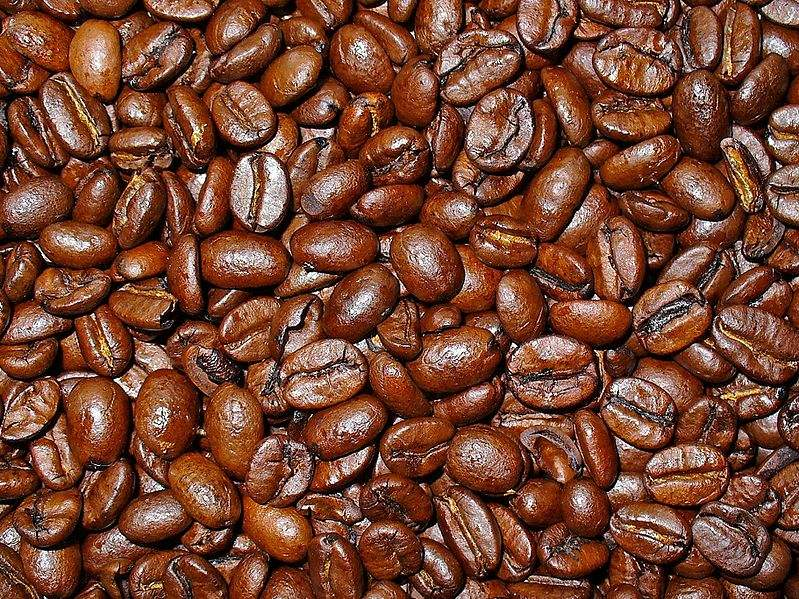

Coffee Beans Varieties
The vast majority of coffee beans in the world come from two species of coffee: Coffea Arabica, and Coffea Robusta.
Arabica
Coffea arabica is a species of coffee tree that produces arabica coffee, accounting for the majority of the coffee consumed in the world. This species of tree is the oldest known tree to be cultivated for coffee production. Until the beginning of the 20th century, it was virtually the only type of tree from which coffee was harvested commercially.
Robusta
Robusta coffee (Coffea canephora; syn. Coffea robusta) is a species of coffee that has its origins in central and western sub-Saharan Africa. It is a species of flowering plant in the Rubiaceae family. Though widely known as Coffea robusta, the plant is scientifically identified as Coffea canephora, which has two main varieties - Robusta and Nganda.